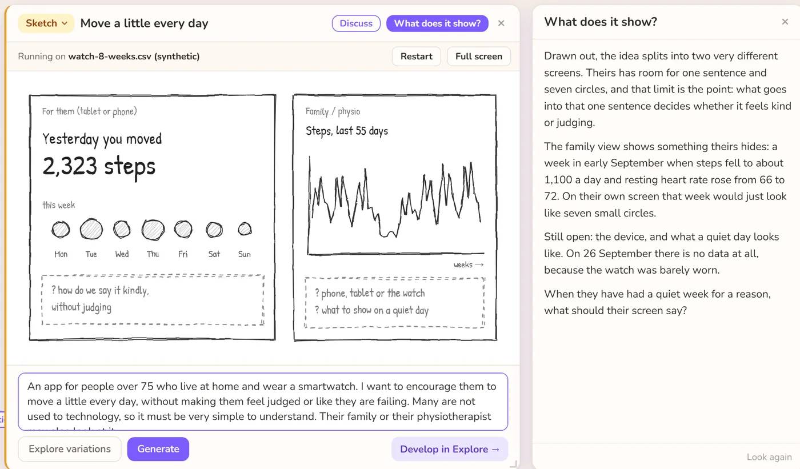
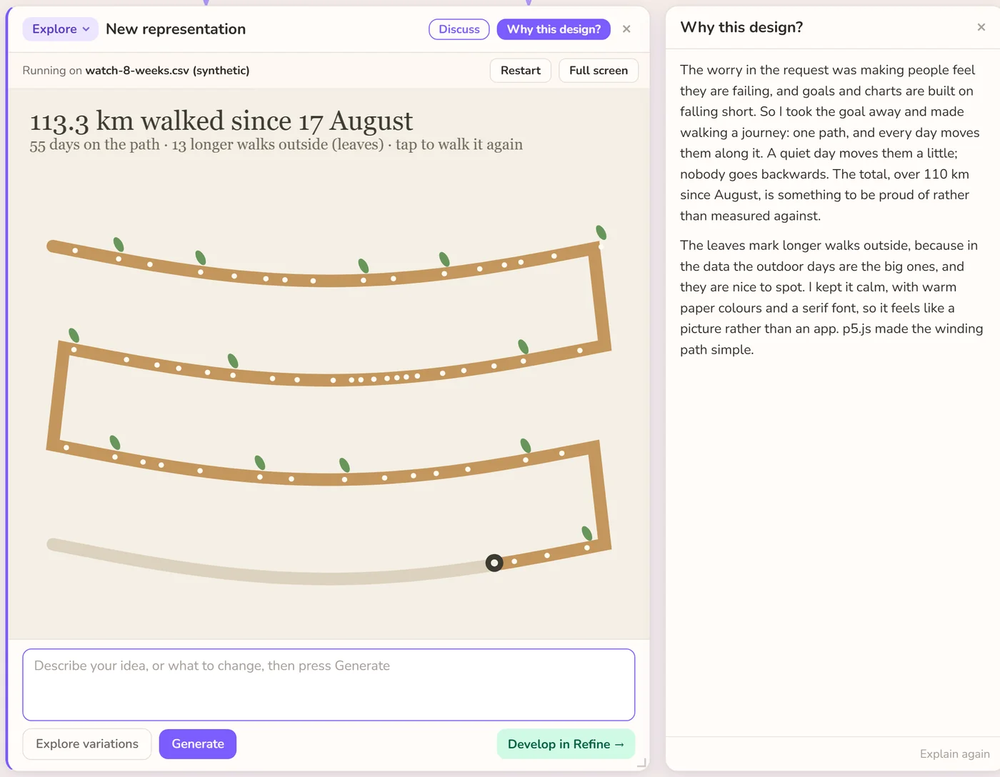
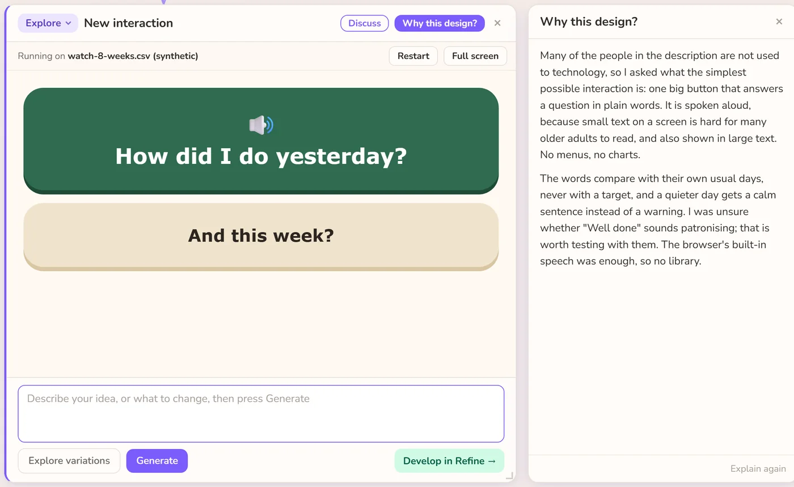
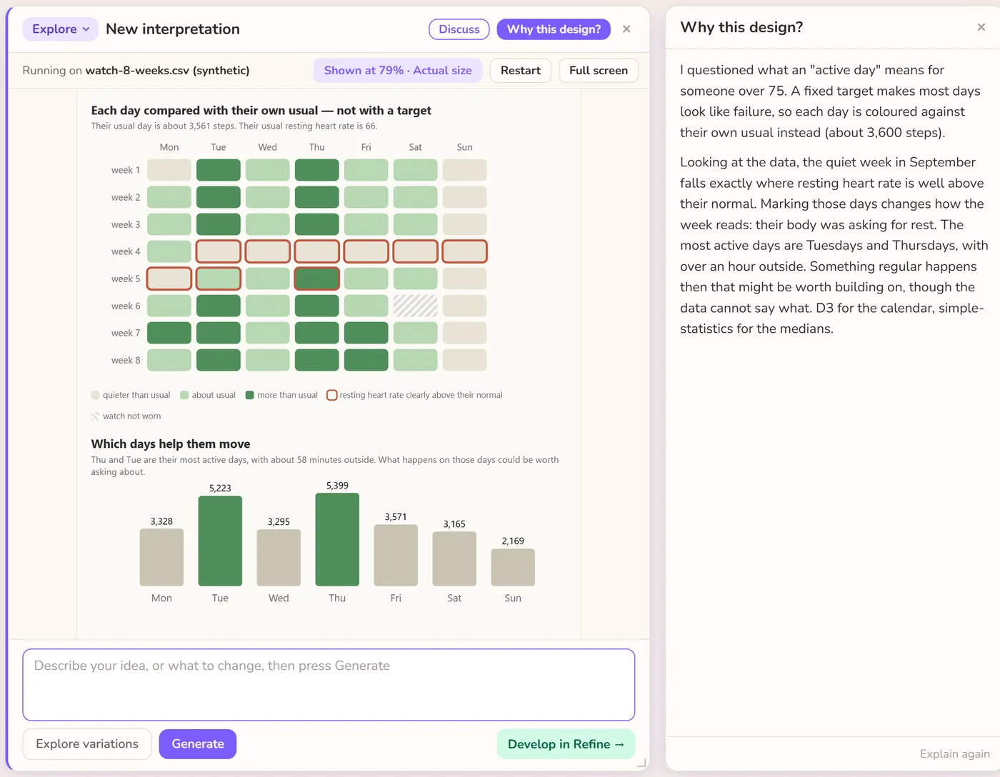
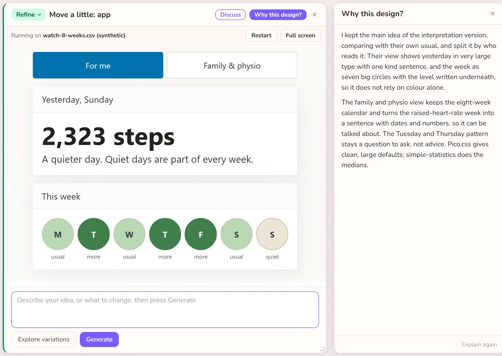

BioSketch
An LLM-programming tool for non-linear, slow design exploration with biodata
- Question
- Can an LLM-programming tool help people sketch applications with biodata, and how does the LLM frame the body along the way?
- Context
- M.Sc. thesis in Human–Computer Interaction (15 hp), then Research Assistant work, Department of Informatics, Umeå University, 2026
- Supervisor
- Dr. Pedro Sanches
- Methods
- Human–AI co-creation sessions, think-aloud protocols, artifact analysis
- Output
- Full paper accepted at Nordes 2027
- Code
- github.com/leonelligabriele-ops/design_exploration_AI (opens in a new tab)
The exploration tree
Most AI coding tools are one long chat: each new answer overwrites the last app, and the design converges on the first idea. In BioSketch every idea is a card on a canvas, with its own running prototype. New ideas branch from old ones, so the whole exploration stays visible as a tree. You can go back to any branch, compare alternatives side by side, and keep several directions open at once.
How this tree grew:
- Sketch The idea: an app for people over 75 who live at home and wear a smartwatch. It should encourage them to move a little every day without making them feel judged. It must be very simple, and family or a physiotherapist may look at it too. The AI answers with a rough, hand-drawn-looking prototype.
- Explore Develop in Explore moves the idea up one level, from “what could this be?” to “which way could it go?”.
- Explore variations branches it three ways:
- a new representation: walking as a journey along one path, where every day moves them forward;
- a new interaction: one big button, “How did I do yesterday?”, that answers aloud;
- a new interpretation: each day compared with their own usual, not a target, so an unwell week reads as rest, not failure.
- Refine The interpretation branch is developed into a near-final app with a “For me” view and a “Family & physio” view. The other branches stay on the canvas.
On a phone? The live tree works best on a laptop or tablet. You can still open it, or read the session card by card instead.
The live tree is the real BioSketch interface in demo mode. Click any card to open its prototype, which runs on synthetic data, and its “Why this design?” explanation. You can also branch new ideas yourself. Without an AI connected, new cards get placeholder output. The example prototypes were written by hand, following the exact prompts BioSketch sends, to show typical output.
Moves for branching
Each card offers moves that open the design up instead of narrowing it down:
- Explore variations branches three new versions of an idea side by side, for example a new representation, interaction or interpretation of the data.
- Develop takes an idea up one level, from Sketch to Explore to Refine, as a new card. The earlier card stays as it was. Each level asks the AI for a different fidelity, from rough to polished.
- Combine merges two or more cards, even from different branches, into one new idea.
- Generate lets you describe an idea, or what to change, in words or with a drawing.
Inside the cards
Each card holds a running prototype, and the AI explains its design choices beside it, so they can be questioned. These are the five cards of the tree above, as they look in the live tool.





Working with biodata
Prototypes run on real bodily data, not mock-ups. A CSV file, a webcam (pose tracking with MediaPipe) or a Bluetooth sensor streams into every card on the tree at once, so all branches can be compared on the same data. The AI explains its design choices, and a discussion panel lets people question them. Every prompt is recorded, and a session can be exported as one readable file, which makes the tool usable as a research instrument.
The study
For my M.Sc. thesis, I studied how experts and non-experts use BioSketch to come up with and prototype biodata applications. Participants sketched with BioSketch and with a standard AI chatbot. I ran human–AI co-creation sessions with think-aloud protocols and analysed the prototypes people made.
As a Research Assistant with Dr. Pedro Sanches, I extended the dataset and analysis into a full paper, accepted at Nordes 2027. We set out to test whether the tool helps people sketch with biodata. We found instead that the way the LLM represents bodies, mostly through metaphor, shapes what people imagine.
What we found
BioSketch kept the design space open; the chatbot closed it. The chatbot produced complete apps so quickly that participants stopped exploring early, and it used only one metaphor: graphs. In BioSketch, branching meant that no single sketch felt finished, and clickable moves meant people did not have to put every idea into a written prompt.
Metaphors moved the uncertainty onto the person. To present the data, the LLM turned bodies into metaphors: a “body weather forecast”, a “Wellness Constellation”, a garden. A metaphor makes data easier to read, but leaves the person asking what it means for them. For one participant, this ambiguity sparked reflection and new ideas. For the others it got in the way, and the LLM’s big creative jumps caused friction.
Some metaphors were in our own code. BioSketch’s system prompt, itself drafted with an LLM, told the model to colour interfaces “green=good, amber=caution, red=alert” and suggested showing data as “something that breathes, grows, decays”. The garden that one participant rejected most likely came from that line. Other metaphors, such as weather and orbits, appeared without any prompt. Together they frame a body as a system to keep in balance or a climate to predict, and “green=good” already decides that a body has a good and a bad state.
Looking back
The study started as a test of a tool and became a study of the assumptions inside it, including assumptions I had built in myself. Reading the code, its comments and the AI’s explanations alongside the sessions turned out to be essential for understanding how participants reacted.
This was an exploratory study of an early prototype, so the findings are early evidence, not general claims. Two directions follow from it: designing for productive ambiguity, where person and LLM build an interpretation together through the interaction, and looking more critically at LLM-assisted coding when it is applied to bodies and health.
My role
- Designed and built BioSketch.
- Planned and ran the human–AI co-creation sessions with experts and non-experts.
- Analysed the think-aloud data and the prototypes participants made.
- First author of the Nordes 2027 paper, with Dr. Pedro Sanches.